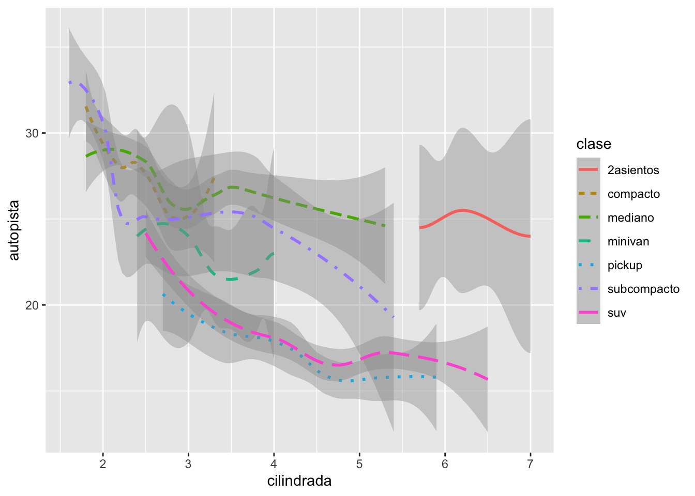
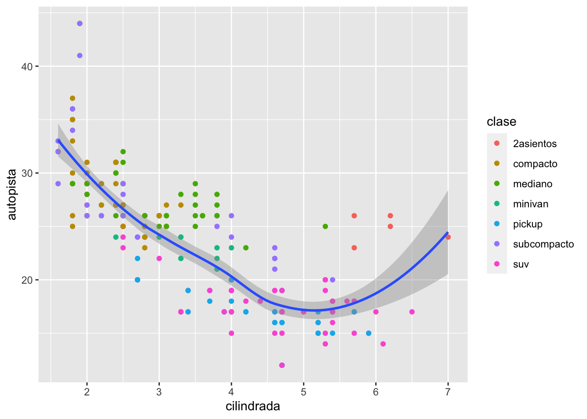

Chapter 2 Flujo de trabajo
El tema proviene de los siguientes sitios.
English: https://r4ds.had.co.nz/workflow-projects.html
Español: https://r4ds-en-espaniol.netlify.app/flujo-de-trabajo-conocimientos-básicos.html
2.2 Creación de un proyecto:
- crear un proyecto para cada curso
- crear un proyecto para cada investigación
- No se te olvida de añadir tu archivos de datos en el proyecto
- Describe claramente todos tus análisis y donde conseguiste la información
- Describe tu interpretación de los análisis o gráficos
- Correr los “scripts” uno a la vez para asegurar que funcione
- knit el archivo .rmd para asegurar que no falte nada.
- no mezclar proyectos de investigación en un mismo proyecto
## ── Attaching core tidyverse packages ──────────────────────── tidyverse 2.0.0 ──
## ✔ dplyr 1.1.2 ✔ readr 2.1.4
## ✔ forcats 1.0.0 ✔ stringr 1.5.0
## ✔ ggplot2 3.4.2 ✔ tibble 3.2.1
## ✔ lubridate 1.9.2 ✔ tidyr 1.3.0
## ✔ purrr 1.0.1
## ── Conflicts ────────────────────────────────────────── tidyverse_conflicts() ──
## ✖ dplyr::filter() masks stats::filter()
## ✖ dplyr::lag() masks stats::lag()
## ℹ Use the conflicted package (<http://conflicted.r-lib.org/>) to force all conflicts to become errors## # A tibble: 234 × 11
## fabricante modelo cilindrada anio cilindros transmision traccion ciudad
## <chr> <chr> <dbl> <int> <int> <chr> <chr> <int>
## 1 audi a4 1.8 1999 4 auto(l5) d 18
## 2 audi a4 1.8 1999 4 manual(m5) d 21
## 3 audi a4 2 2008 4 manual(m6) d 20
## 4 audi a4 2 2008 4 auto(av) d 21
## 5 audi a4 2.8 1999 6 auto(l5) d 16
## 6 audi a4 2.8 1999 6 manual(m5) d 18
## 7 audi a4 3.1 2008 6 auto(av) d 18
## 8 audi a4 quattro 1.8 1999 4 manual(m5) 4 18
## 9 audi a4 quattro 1.8 1999 4 auto(l5) 4 16
## 10 audi a4 quattro 2 2008 4 manual(m6) 4 20
## # ℹ 224 more rows
## # ℹ 3 more variables: autopista <int>, combustible <chr>, clase <chr>

## # A tibble: 6 × 11
## fabricante modelo cilindrada anio cilindros transmision traccion ciudad
## <chr> <chr> <dbl> <int> <int> <chr> <chr> <int>
## 1 audi a4 1.8 1999 4 auto(l5) d 18
## 2 audi a4 1.8 1999 4 manual(m5) d 21
## 3 audi a4 2 2008 4 manual(m6) d 20
## 4 audi a4 2 2008 4 auto(av) d 21
## 5 audi a4 2.8 1999 6 auto(l5) d 16
## 6 audi a4 2.8 1999 6 manual(m5) d 18
## # ℹ 3 more variables: autopista <int>, combustible <chr>, clase <chr>## [1] 234 11ggplot(data = millas) +
geom_point(mapping = aes(x = cilindrada, y = autopista, alpha = fabricante, colour=fabricante))## Warning: Using alpha for a discrete variable is not advised.
ggplot(data = millas) +
geom_point(mapping = aes(x = cilindrada, y = autopista), shape=11, color = "#c093cc", fill="yellow")

## Saving 7 x 5 in image## # A tibble: 234 × 11
## fabricante modelo cilindrada anio cilindros transmision traccion ciudad
## <chr> <chr> <dbl> <int> <int> <chr> <chr> <int>
## 1 audi a4 1.8 1999 4 auto(l5) d 18
## 2 audi a4 1.8 1999 4 manual(m5) d 21
## 3 audi a4 2 2008 4 manual(m6) d 20
## 4 audi a4 2 2008 4 auto(av) d 21
## 5 audi a4 2.8 1999 6 auto(l5) d 16
## 6 audi a4 2.8 1999 6 manual(m5) d 18
## 7 audi a4 3.1 2008 6 auto(av) d 18
## 8 audi a4 quattro 1.8 1999 4 manual(m5) 4 18
## 9 audi a4 quattro 1.8 1999 4 auto(l5) 4 16
## 10 audi a4 quattro 2 2008 4 manual(m6) 4 20
## # ℹ 224 more rows
## # ℹ 3 more variables: autopista <int>, combustible <chr>, clase <chr>Ejercicio para someter:
- baja el paquete “ggversa”
- activar el paquete “ggversa”
- mirar las variables del archivo en este paquete que se llama “Anolis”
- haga un gráfico que incluye lo siguiente
- en el eje de x = el SVL. que es el tamaño del lagarto del hocico a la cloaca y en la variable de “TAIL” en el eje de y.
- selecciona la variable “SEX_AGE” para color
- selecciona la función correcta para que cada “SEX_AGE” tenga su proprio gráfico
- salva el gráfico en .png o .jpg
- subir el gráfico aquí
## # A tibble: 6 × 15
## STUDY Survey_Site LOCATION TIME DATE SEASON SPECIES SEX_AGE HEIGHT
## <chr> <chr> <chr> <tim> <chr> <chr> <chr> <chr> <dbl>
## 1 Mark/recap North Tower El Verde 10:46 3/13… dry Anolis… Female 0
## 2 Mark/recap Woods walkway t… El Verde 10:15 2/20… dry Anolis… Juvenil 0
## 3 Mark/recap Woods walkway t… El Verde 11:15 2/21… dry Anolis… Male 0
## 4 Mark/recap North Tower El Verde 11:06 3/16… dry Anolis… Juvenil 0.3
## 5 Mark/recap North Tower El Verde 12:31 3/11… dry Anolis… Male 0.3
## 6 Mark/recap North Tower El Verde 01:00 3/9/… dry Anolis… Female 0.4
## # ℹ 6 more variables: DISTANCE_FROM_CENTERLINE <dbl>, PERCH_SUBSTRATE <chr>,
## # PERCH_DIAMETER <int>, WEIGHT <dbl>, SVL <dbl>, TAIL <dbl>ggplot(data = Anolis) +
geom_point(mapping = aes(x = SVL, y = TAIL, color=SEX_AGE))+
facet_wrap(~SEX_AGE, ncol=1)## Warning: Removed 418 rows containing missing values (`geom_point()`).
# derecha LOESS
ggplot(data = millas) +
geom_smooth(method=lm,mapping = aes(x = cilindrada, y = autopista))+ # y = mx+b
geom_point( mapping = aes(x = cilindrada, y = autopista))## `geom_smooth()` using formula = 'y ~ x'
## [1] "fabricante" "modelo" "cilindrada" "anio" "cilindros"
## [6] "transmision" "traccion" "ciudad" "autopista" "combustible"
## [11] "clase"ggplot(data = millas) +
geom_smooth(mapping = aes(x = cilindrada, y = autopista, linetype = clase, colour=clase))## `geom_smooth()` using method = 'loess' and formula = 'y ~ x'## Warning in simpleLoess(y, x, w, span, degree = degree, parametric = parametric,
## : span too small. fewer data values than degrees of freedom.## Warning in simpleLoess(y, x, w, span, degree = degree, parametric = parametric,
## : pseudoinverse used at 5.6935## Warning in simpleLoess(y, x, w, span, degree = degree, parametric = parametric,
## : neighborhood radius 0.5065## Warning in simpleLoess(y, x, w, span, degree = degree, parametric = parametric,
## : reciprocal condition number 0## Warning in simpleLoess(y, x, w, span, degree = degree, parametric = parametric,
## : There are other near singularities as well. 0.65044## Warning in predLoess(object$y, object$x, newx = if (is.null(newdata)) object$x
## else if (is.data.frame(newdata))
## as.matrix(model.frame(delete.response(terms(object)), : span too small. fewer
## data values than degrees of freedom.## Warning in predLoess(object$y, object$x, newx = if (is.null(newdata)) object$x
## else if (is.data.frame(newdata))
## as.matrix(model.frame(delete.response(terms(object)), : pseudoinverse used at
## 5.6935## Warning in predLoess(object$y, object$x, newx = if (is.null(newdata)) object$x
## else if (is.data.frame(newdata))
## as.matrix(model.frame(delete.response(terms(object)), : neighborhood radius
## 0.5065## Warning in predLoess(object$y, object$x, newx = if (is.null(newdata)) object$x
## else if (is.data.frame(newdata))
## as.matrix(model.frame(delete.response(terms(object)), : reciprocal condition
## number 0## Warning in predLoess(object$y, object$x, newx = if (is.null(newdata)) object$x
## else if (is.data.frame(newdata))
## as.matrix(model.frame(delete.response(terms(object)), : There are other near
## singularities as well. 0.65044## Warning in simpleLoess(y, x, w, span, degree = degree, parametric = parametric,
## : pseudoinverse used at 4.008## Warning in simpleLoess(y, x, w, span, degree = degree, parametric = parametric,
## : neighborhood radius 0.708## Warning in simpleLoess(y, x, w, span, degree = degree, parametric = parametric,
## : reciprocal condition number 0## Warning in simpleLoess(y, x, w, span, degree = degree, parametric = parametric,
## : There are other near singularities as well. 0.25## Warning in predLoess(object$y, object$x, newx = if (is.null(newdata)) object$x
## else if (is.data.frame(newdata))
## as.matrix(model.frame(delete.response(terms(object)), : pseudoinverse used at
## 4.008## Warning in predLoess(object$y, object$x, newx = if (is.null(newdata)) object$x
## else if (is.data.frame(newdata))
## as.matrix(model.frame(delete.response(terms(object)), : neighborhood radius
## 0.708## Warning in predLoess(object$y, object$x, newx = if (is.null(newdata)) object$x
## else if (is.data.frame(newdata))
## as.matrix(model.frame(delete.response(terms(object)), : reciprocal condition
## number 0## Warning in predLoess(object$y, object$x, newx = if (is.null(newdata)) object$x
## else if (is.data.frame(newdata))
## as.matrix(model.frame(delete.response(terms(object)), : There are other near
## singularities as well. 0.25
ggplot(data = millas, mapping = aes(x = cilindrada, y = autopista)) +
geom_point(mapping = aes(color = clase)) +
geom_smooth(data = filter(millas, clase == "suv"), se =TRUE)## `geom_smooth()` using method = 'loess' and formula = 'y ~ x'
## `geom_smooth()` using method = 'loess' and formula = 'y ~ x'
ggplot() +
geom_point(data = millas, mapping = aes(x = cilindrada, y = autopista)) +
geom_smooth(data = millas, mapping = aes(x = cilindrada, y = autopista))## `geom_smooth()` using method = 'loess' and formula = 'y ~ x'
ggplot(data = millas, mapping = aes(x = cilindrada, y = autopista)) +
geom_point(mapping = aes(color = clase)) +
geom_smooth()## `geom_smooth()` using method = 'loess' and formula = 'y ~ x'
2.3 Transformación estadística
## # A tibble: 6 × 10
## precio quilate corte color claridad profundidad tabla x y z
## <int> <dbl> <ord> <ord> <ord> <dbl> <dbl> <dbl> <dbl> <dbl>
## 1 326 0.23 Ideal E SI2 61.5 55 3.95 3.98 2.43
## 2 326 0.21 Premium E SI1 59.8 61 3.89 3.84 2.31
## 3 327 0.23 Bueno E VS1 56.9 65 4.05 4.07 2.31
## 4 334 0.29 Premium I VS2 62.4 58 4.2 4.23 2.63
## 5 335 0.31 Bueno J SI2 63.3 58 4.34 4.35 2.75
## 6 336 0.24 Muy bueno J VVS2 62.8 57 3.94 3.96 2.48## [1] 53940## [1] 10## [1] 53940 10## [1] 18823## [1] 326## [1] Ideal Premium Bueno Muy bueno Regular
## Levels: Regular < Bueno < Muy bueno < Premium < Ideal
ggplot(data = diamantes) +
stat_summary(
mapping = aes(x = corte, y = profundidad),
fun.min = min,
fun.max = max,
fun = median
)
## [1] 1 2 3 4 5 6 7 8 9 10 11 12 13 14 15 16 17 18
## [19] 19 20 21 22 23 24 25 26 27 28 29 30 31 32 33 34 35 36
## [37] 37 38 39 40 41 42 43 44 45 46 47 48 49 50 51 52 53 54
## [55] 55 56 57 58 59 60 61 62 63 64 65 66 67 68 69 70 71 72
## [73] 73 74 75 76 77 78 79 80 81 82 83 84 85 86 87 88 89 90
## [91] 91 92 93 94 95 96 97 98 99 100 NA## [1] 50.5

bar <- ggplot(data = diamantes) +
geom_bar(
mapping = aes(x = corte, fill = corte),
show.legend = FALSE,
width = 1
) +
theme(aspect.ratio = 1) +
labs(x = NULL, y = NULL)
bar


## Rows: 3831 Columns: 14
## ── Column specification ────────────────────────────────────────────────────────
## Delimiter: ","
## chr (8): FL_DATE, OP_UNIQUE_CARRIER, ORIGIN, ORIGIN_CITY_NAME, ORIGIN_STATE_...
## dbl (6): DEP_TIME, DEP_DELAY, CRS_ARR_TIME, ARR_TIME, ARR_DELAY, CANCELLED
##
## ℹ Use `spec()` to retrieve the full column specification for this data.
## ℹ Specify the column types or set `show_col_types = FALSE` to quiet this message.## # A tibble: 6 × 14
## FL_DATE OP_UNIQUE_CARRIER ORIGIN ORIGIN_CITY_NAME ORIGIN_STATE_ABR DEST
## <chr> <chr> <chr> <chr> <chr> <chr>
## 1 2/1/18 NK SJU San Juan, PR PR MCO
## 2 2/1/18 AA MIA Miami, FL FL SJU
## 3 2/1/18 AA SJU San Juan, PR PR DFW
## 4 2/1/18 AA SJU San Juan, PR PR MIA
## 5 2/1/18 AA SJU San Juan, PR PR ORD
## 6 2/1/18 AA MIA Miami, FL FL SJU
## # ℹ 8 more variables: DEST_CITY_NAME <chr>, DEST_STATE_ABR <chr>,
## # DEP_TIME <dbl>, DEP_DELAY <dbl>, CRS_ARR_TIME <dbl>, ARR_TIME <dbl>,
## # ARR_DELAY <dbl>, CANCELLED <dbl>